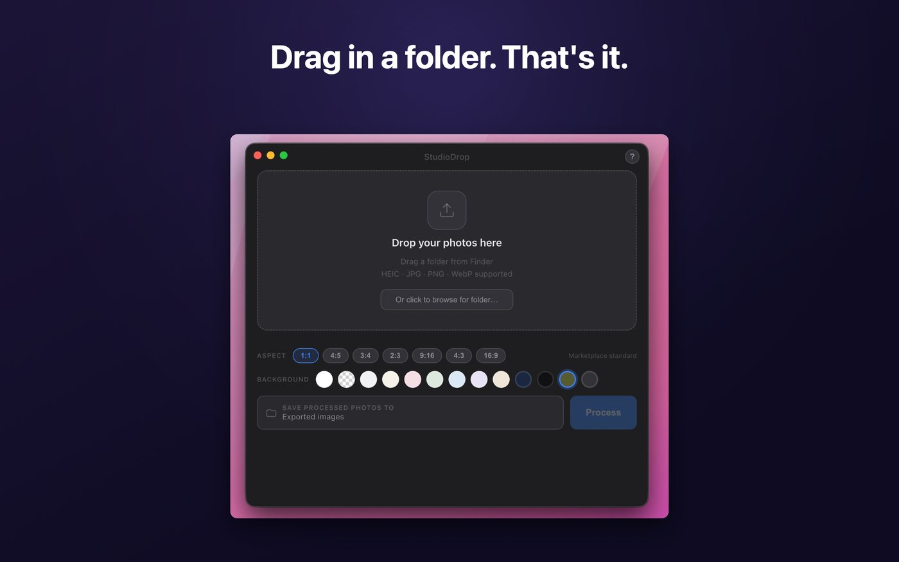
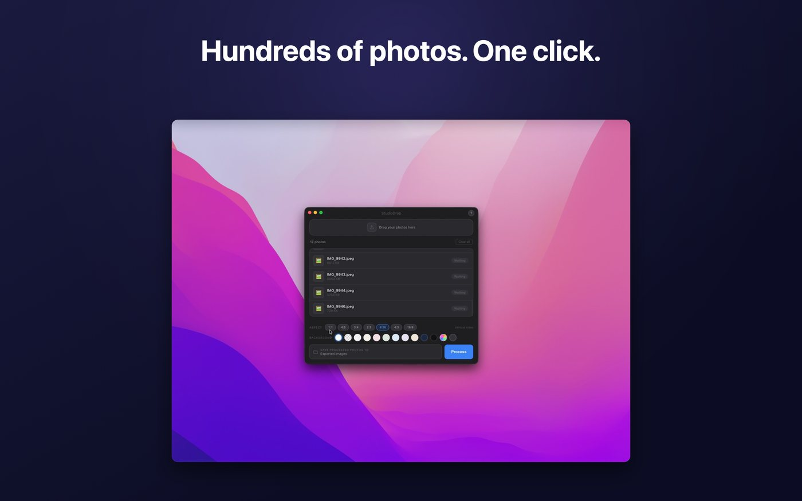
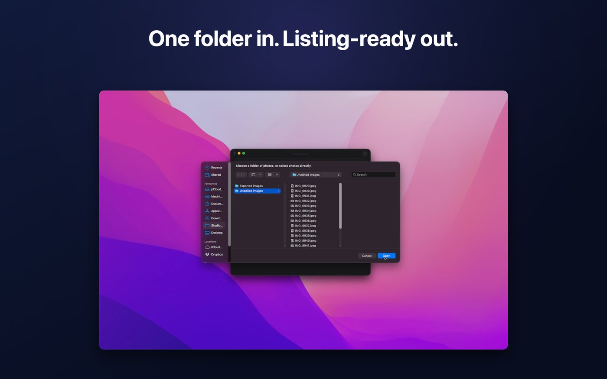
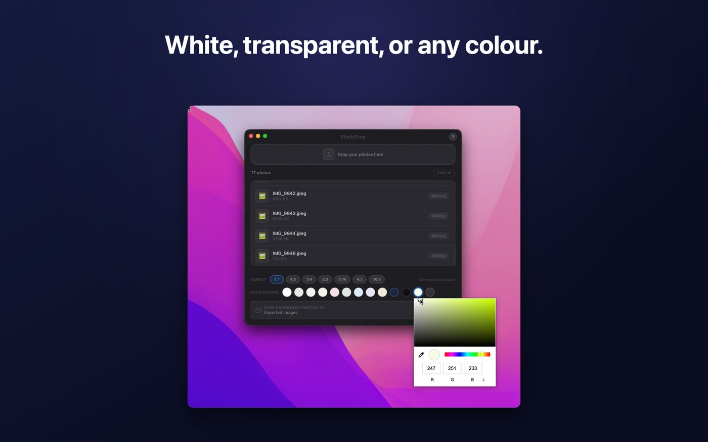
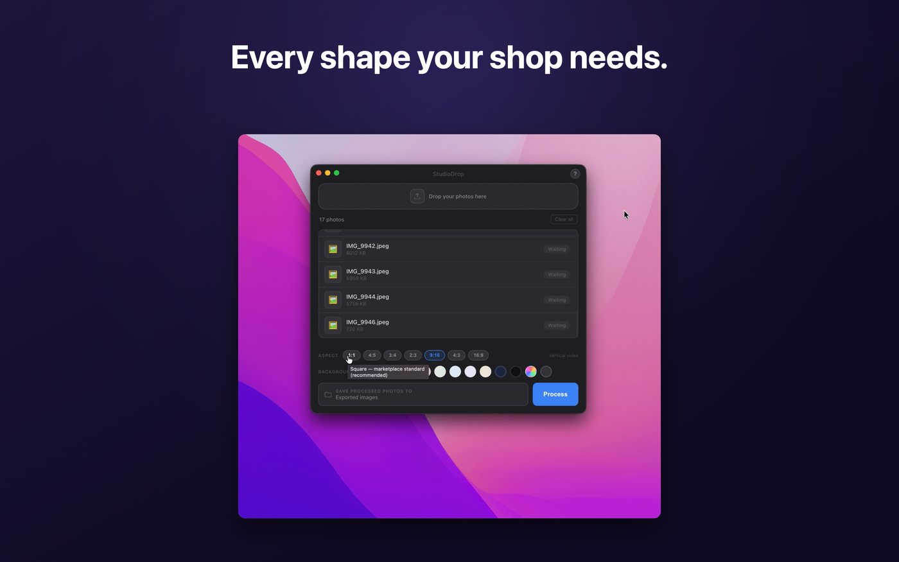
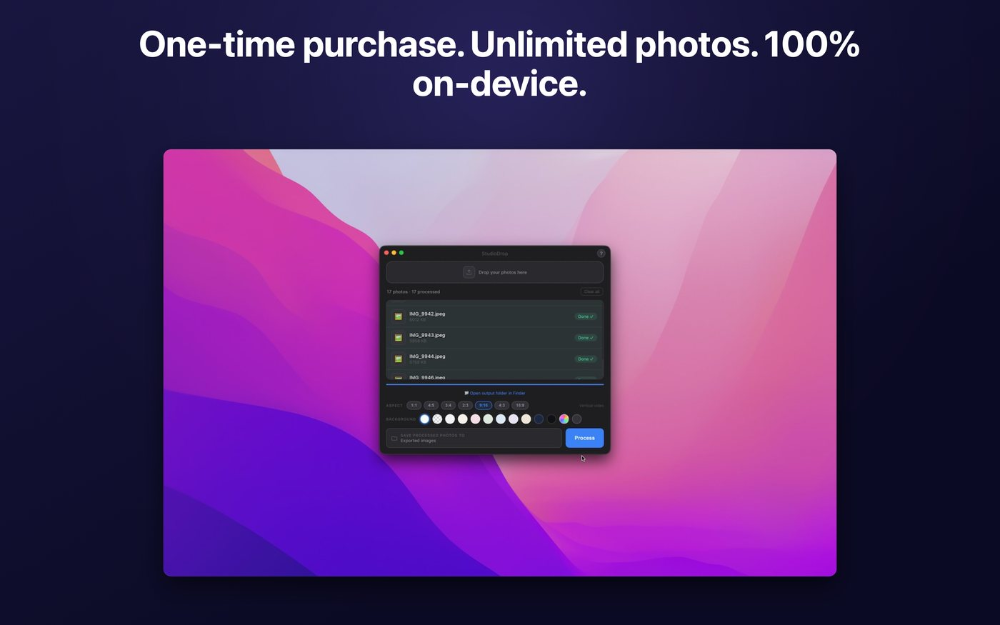

Mac · macOS 14+ · Apple Silicon
Drag in a folder. Get a catalogue back.
In short. StudioDrop for Mac batch-removes backgrounds from product photos. Drag a folder from Finder, pick a backdrop and shape, click Process, and get back clean listing images — 500+ in one go, at a 2000 pixel long edge. All processing happens on your own Mac using Apple Silicon; nothing is uploaded. £19.99, one-time, no subscription. Requires macOS 14+ on an M1 Mac or later.
One, ten, or five hundred phone snaps in. Clean, bright, shadow-lit, listing-ready product photos out. Processed entirely on your own Mac — nothing uploaded, nothing metered, nothing renewing.
One-time purchase · Unlimited photos · Works offline · 52 languages

To every photo
What happens when you press Process
Background removed
Apple's on-device machine learning finds the item's edge and lifts it cleanly off whatever it was sitting on.
Your backdrop applied
Pure white, transparent PNG, any colour from a full wheel, curated palette presets — or your own image, for a branded backdrop no cloud tool will give you.
Studio shadow added
A soft, professional shadow underneath, so the item sits in a space instead of floating in a void. This is the detail that reads as "photographed properly".
Auto-enhanced
Sharper detail, brighter lighting, richer colour — tuned for product photography rather than for holiday snaps.
Cropped to shape
Square, portrait, tall pin, vertical video, landscape and wide. The long edge is always a crisp 2000 pixels regardless of which you pick.
Saved safely
Smart filenames mean duplicates never overwrite each other, and your original files are never touched, moved or modified.
Built for volume
The point of the desktop app is quantity
If you're doing five items, use your phone. If you're doing a house clearance, a card collection, an estate lot or a week of stock, this is the one.
- Batch process entire folders — 500+ photos in one go
- The AI engine loads once and stays warm between batches
- Drag a folder straight from Finder, or drop individual files
- HEIC direct from your iPhone, plus JPG, PNG, WebP and TIFF
- Runs at native Apple Silicon speed with no round-trip to anywhere
- No connection needed — process stock in a lock-up with no wifi

In the app
One window. Nothing to learn.




Which one
Go, Mac, or both?
They're separate purchases and each works completely on its own. Same engine, identical results — the difference is where and how much.
| StudioDrop Go | StudioDrop for Mac | |
|---|---|---|
| Price | £7.99 | £19.99 |
| Devices | iPhone & iPad | Mac (Apple Silicon) |
| Requires | iOS / iPadOS 17+ | macOS 14+ |
| Input | Photos library | Finder folders & files |
| Batch size | A whole shoot at once | 500+ in one go |
| Backdrops | White, transparent, 9 colours, full wheel | All of those, plus your own image |
| Formats in | Photos library formats | HEIC, JPG, PNG, WebP, TIFF |
| Output | "StudioDrop" album in Photos | A folder, smart filenames |
| On-device | Yes — nothing uploaded | Yes — nothing uploaded |
Buy Go if you photograph with your phone and list from your phone. That's most resellers, and it's the cheaper answer.
Buy Mac if you shoot to a camera or SD card, list in long sessions at a desk, or regularly process more than about thirty items at a time.
Buy both if you shoot on the go and tidy up at home — plenty of people do.
Questions
About the Mac app specifically
Will it run on my Intel Mac?
No. It needs macOS 14 or later on a Mac with an Apple M1 chip or later. The whole speed and privacy story depends on Apple Silicon's neural engine, and it wouldn't be honest to ship something slow on Intel and call it the same product.
How long does 500 photos actually take?
It depends on your Mac and your image sizes, but the engine loads once and stays warm, so a large batch runs far faster per-photo than a small one. There's no upload wait at any point, which is where cloud tools lose most of their time.
Can I use my own background image?
Yes — this is a Mac-only feature. Drop in an image and it becomes the backdrop, which is how you get a consistent branded look across a whole catalogue.
Does it touch my original files?
Never. Originals are read and left exactly as they were. Output goes to a separate location with smart filenames so nothing overwrites anything.
Is my Go purchase valid on Mac?
No — they're two separate apps and two separate purchases. Apple treats iOS and Mac apps as distinct products unless a developer bundles them as Universal, and these aren't. Each works completely on its own.
Do I need an internet connection?
Only to download the app from the Mac App Store. After that, never. It makes no network connections and works fully offline.
One drag. One click. A catalogue.
Buy once, own forever, process as much as you like.
macOS 14+ on Apple Silicon · 68.4 MB · Family Sharing · 52 languages